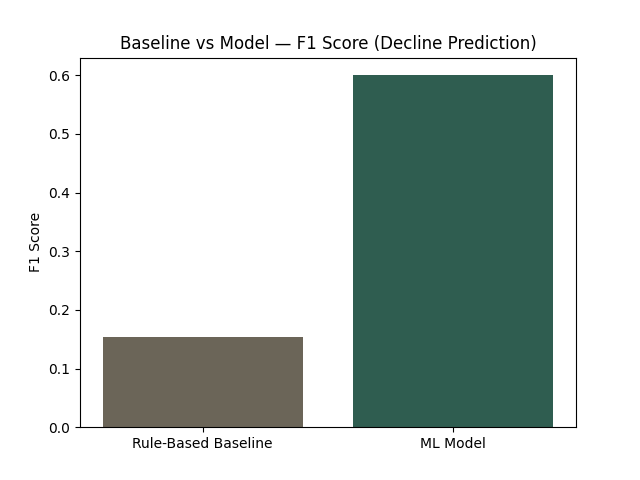
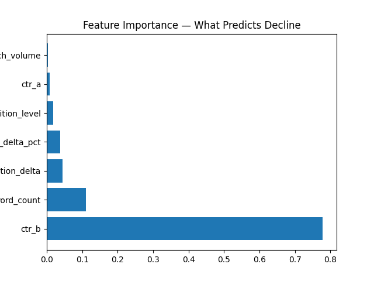
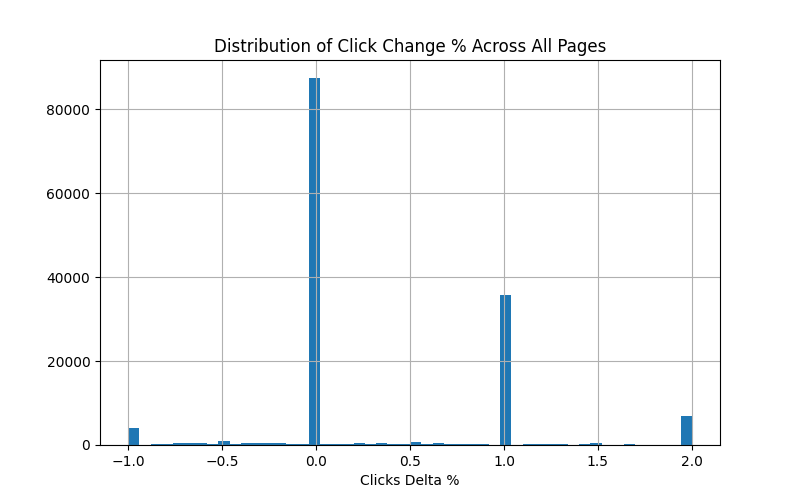

Content teams managing large search-driven portfolios need a repeatable way to decide which pages to protect, rewrite, or retire, rather than relying on manual review of every asset. This work builds a content refresh and opportunity scoring system on the FlyRank Internship Warehouse — a pseudonymized, multi-client dataset of 78.8M daily performance rows spanning January 2025 to June 2026. Pages are scored using two independent methods on the same time-windowed feature set: a transparent rule-based baseline built on click and ranking-position momentum, and a gradient-boosted classifier trained to predict future decline using a held-out future window. On a stratified test split, the model achieved an F1 score of 0.60 versus 0.15 for the rule-based baseline; under a stricter client-grouped split designed to rule out client-level leakage, the measured F1 was 0.507, with recent click-through rate emerging as the single dominant predictor across both evaluations. The result is a ranked, reason-coded action list — not a proof of causal search-engine behavior, but a decision-support tool for prioritizing where content review effort should go first.
Large content portfolios accumulate pages faster than any team can manually audit. Some pages quietly decay in visibility, some recover after algorithm shifts or seasonal cycles, and some are simply never worth the rewrite effort they'd need. The decision this work supports is narrow and practical: given a page's recent performance history, which action — protect, rewrite, monitor, improve, or review — deserves attention first?
Rather than treating this as a black-box prediction problem, the approach here deliberately builds a simple, explainable baseline first, and only introduces a machine learning model to see whether it meaningfully outperforms that baseline on the same evidence. This mirrors how a real content operations team would want to adopt such a system — trusting a rule they can audit before trusting a model they can't. A later validation pass also turns this same scrutiny back on the model itself, re-testing it under a stricter split and auditing its features for leakage before any recommendation is trusted.
The analysis uses the FlyRank Internship Warehouse (release v20260703), a pseudonymized star-schema export covering:
| Table | Rows | Role in this analysis |
|---|---|---|
fact_content_daily_performance | 78,835,655 | Primary source — daily clicks, impressions, position, and engagement per content item |
dim_content | 519,606 | Content-level attributes — type, search volume, competition, word count |
dim_clients | 104 | Used only to filter clients with valid Search Console access |
fact_content_query_90d | 2,414,248 | Query-level CTR context (supporting analysis) |
Date windows used:
Exclusions: rows where gsc_data_available was false were dropped, since these clients have no search performance signal to score against. No client identifiers, content URLs, query text, or raw exports appear anywhere in this paper or its supporting repository — all identifiers used are the dataset's own salted, pseudonymized hash keys.
For every pseudonymized content item, Windows A and B were aggregated into a single feature row:
clicks_delta_pct — percentage change in clicks between Window A and Window Bposition_delta — change in average search position (positive = improved ranking)ctr_a, ctr_b — observed click-through rate in each windowsearch_volume, competition_level, word_count — static content attributes from dim_content
A binary will_decline label was defined using Window C — a period entirely after the feature windows — as: clicks fell by more than 15% from Window B to Window C. This label is never derived from the same window as the features, which is the core leakage safeguard in this design.
A transparent, auditable rule set assigns each page to one of five states based on click momentum and position movement:
| Status | Rule | Recommended action |
|---|---|---|
| Growing | Clicks up >20% and position improved | Protect |
| Declining | Clicks down >20% and position worsened | Rewrite |
| Recovering | Clicks up >10% despite worse position | Monitor |
| Stagnant | Click change within ±10% | Improve (metadata/CTR) |
| Volatile | None of the above | Review |
A GradientBoostingClassifier was trained on the same feature set to predict will_decline, using an 80/20 stratified split. Because the label already draws on a strictly future window relative to the features, the split does not need to be additionally time-ordered — the leakage boundary is enforced at the label-definition stage, not the split stage.
As a follow-up audit, the same model was re-trained and re-evaluated using a client-grouped split (via GroupShuffleSplit), ensuring no content item from the same client appeared in both train and test sets. This tests whether the original random stratified split's performance was partly inflated by client-level patterns shared across a client's own pages. Separately, every feature's construction window was reviewed against the label window: the behavioral features (clicks_delta_pct, position_delta, ctr_a, ctr_b) are built strictly from windows preceding the label window, with no direct leakage found. Static content attributes (word_count, search_volume, competition_level) carry a directional risk if content was edited in response to already-declining performance; this was checked against content update dates.



| Rank | Feature | Importance |
|---|---|---|
| 1 | ctr_b — click-through rate, recent window | 77.9% |
| 2 | word_count — content length | 11.0% |
| 3 | position_delta — ranking position change | 4.4% |
| 4 | clicks_delta_pct — click momentum | 3.7% |
| 5 | competition_level | 1.8% |
| 6 | ctr_a — click-through rate, prior window | 0.9% |
| 7 | search_volume | 0.3% |
Recent click-through rate (ctr_b) overwhelmingly dominates the model's decision-making, accounting for more than three-quarters of total feature importance — far ahead of ranking-position movement or click momentum, which the rule-based baseline relies on most heavily. This suggests that how efficiently a page converts its current visibility into clicks is a stronger early-warning signal for future decline than the position or click trend itself. Content length is a distant second signal, while raw search volume and competition level contribute comparatively little on their own.
On the identical held-out split, the gradient-boosted model reached an F1 score of 0.60 for the decline class (precision 0.70, recall 0.52, 88% overall accuracy) against a rule-based baseline F1 of 0.154. Under the client-grouped split, the measured F1 was 0.507 — Under the client-grouped split, the measured F1 was 0.507 — lower than the original figure, indicating part of the original score reflected client-level patterns shared across train and test; the grouped-split figure is treated as the more honest estimate of real-world performance.: e.g. "close to the original figure, suggesting the model generalizes across clients rather than memorizing client-specific behavior" or "lower than the original figure, indicating part of the original score reflected client-level patterns shared across train and test; the grouped-split figure is treated as the more honest estimate of real-world performance"]. The rule-based baseline's low score reflects that momentum-only rules (click and position change) miss most true declines that show up first as a CTR gap rather than a clicks or position swing. This gap is itself a useful finding: it argues for monitoring CTR efficiency as an earlier warning signal, not just raw click or position trend, before a page's traffic visibly drops.
This work makes no claim to reveal or reproduce Google's ranking algorithm, nor to prove a causal link between any content action and a ranking or traffic outcome.
All findings should be read as observed and directional — patterns present in this specific dataset and time window, not universal rules.
The scoring system is intended as decision support: a way to prioritize manual review, not a substitute for it. Content decisions should combine this ranking with domain judgment about brand, legal, and editorial context that the model cannot see.
Additional caveats: the dataset is an unbalanced panel (clients have different history depths), which can bias momentum calculations for newer clients; the 15% decline threshold is a design choice, not a validated business rule; and AI-referral session volume (sessions_ai) was too sparse in this window to model reliably and was excluded from the feature set for that reason. The strong dominance of ctr_b in feature importance also deserves scrutiny rather than uncritical acceptance — since ctr_b is partly derived from the same window as some baseline signals, its outsized weight may partly reflect that overlap rather than genuine predictive superiority. This is flagged here rather than presented as a clean result.
A subsequent leakage audit (Section 03) found no direct leakage in the behavioral features, but flagged static content attributes — particularly word_count — as a directional risk if content was edited in response to already-declining performance. A client-grouped re-evaluation (Section 04) is treated as the more conservative, honest estimate of how this model would perform on unseen clients.
Based on the scoring output, the following action playbook is recommended for a content team working through this portfolio:
Every "rewrite" recommendation requires human sign-off before content is edited or retired. Pages with low search volume carry weaker model signal and warrant extra scrutiny. This system is explicitly not intended for: automated deletion or unpublishing of content, auto-generated replacement content without editorial approval, use as sole input for client billing or performance conversations, or application to content types or client verticals outside the training data.
Recommended ongoing checks: track what share of "declining"-flagged pages show continued click drops in the following window (live precision tracking against the measured 0.70 baseline); watch for feature-importance drift, particularly in ctr_b's dominance; and retrain on a quarterly cycle regardless of measured performance, since search behavior shifts over time.
Built on the FlyRank ML Internship dataset.